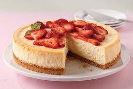

Cheesecake

Philadelphia Classic Cheesecake
Prepare this rich, creamy Philadelphia Classic Cheesecake today!
Ingredients
- 1-1/2 cups graham cracker crumbs
- 3 Tbsp. sugar
- 1/3 cup butter or margarine, melted
- 4 pkg. (8 oz. each) PHILADELPHIA Cream Cheese, softened
- 1 cup sugar
- 1 tsp. vanilla
- 4 eggs
Steps
- Heat oven to 325°F.
- Combine graham crumbs, 3 Tbsp. sugar and butter; press onto bottom of 9-inch spring-form pan.
- Beat cream cheese, 1 cup sugar and vanilla with Mixer until blended. Add eggs, 1 at a time, mixing on low speed after each just until blended. Pour over crust.
- Bake 55 min. or until center is almost set. Run knife around rim of pan to loosen cake; cool before removing rim. Refrigerate cheesecake 4 hours.